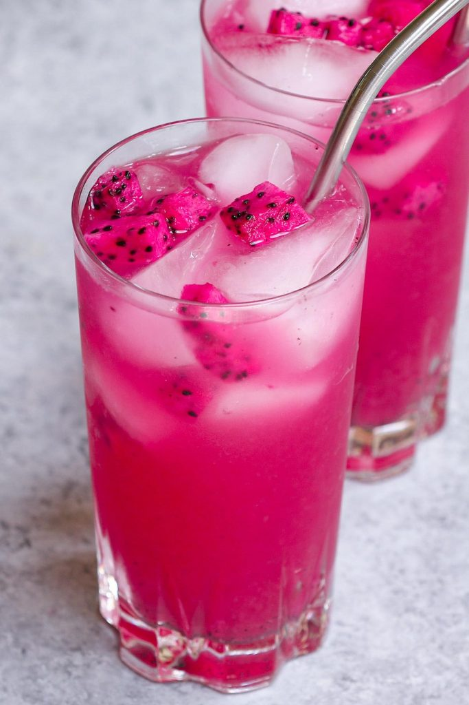

🍇Mango Dragonfruit🍇
A refreshing drink!
The mango dragonfuit is one of my ALL-TIME favorite refresher from Starbucks. Unlike the Strawberry Acai, the Mango Dragonfruit is blasting with more flavor! Follow along to figure out how you could make one from the comfort of your own home!
Ingredients:
- 3 c Water
- Ice
- 3/4 tsp green bean coffee extract (powder)
- 2 1/2 c white grape juice
- 2 pumps mango puree, approx. 2 tbsp
- fresh dragonfruit pieces
Steps:
- Whisk together powder ingredients and water until dissolved.
- Add white grape juice and mango puree.
- Mix to combine.
- Serve over Ice.